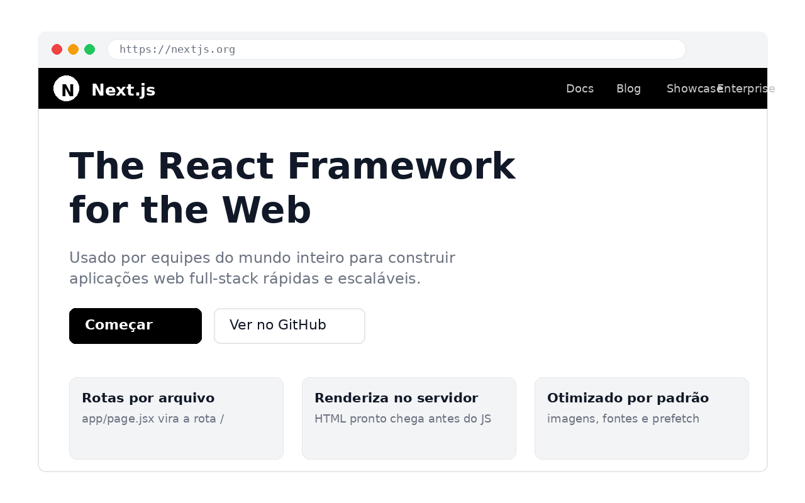

O que é o Next.js
Ana instalou o React no computador e criou componentes lindos — mas toda página recarregava inteiro a cada clique, o Google não enxergava o conteúdo, e ela descobriu que React sozinho só cuida da camada visual. Nesta página você vai entender o que o Next.js adiciona por cima do React e por que ele virou o padrão para aplicações web em 2025.
- O que é um framework fullstack e por que o Next.js é um
- O que o Next.js adiciona ao React: servidor, rotas, SSR, otimizações
- A história do Next.js: de 2016 até o Next.js 15
- Quando faz sentido usar Next.js (e quando React puro basta)
A ideia: React é o motor, Next.js é o carro inteiro
Imagine que você compra um motor de carro de Fórmula 1. É uma peçaFantástica — Gira a 15 mil rotações por minuto e faz o carro voar. Mas sozinho, esse motor não leva você a lugar nenhum: não tem rodas, não tem volante, não tem tanque de combustível, não tem freio e nem banco para sentar. O motor é só uma parte do veículo. O React é exatamente isso: um "motor de interfaces" brilliantíssimo, criado pelo Facebook em 2013, que transforma dados em telas — mas que, sozinho, não sabe criar rotas, não sabe conversar com um banco de dados, não entrega a página pronta para o Google ler e não otimiza imagens.
O Next.js entra como a montadora que pega esse motor e constrói o carro completo ao redor dele. Ele foi criado por Guillermo Rauch em 2016 (hoje na empresa Vercel) exatamente com essa visão: você escreve componentes React como sempre escreveu, e o Next entrega uma aplicação completa — com rotas automáticas, servidor embutido, páginas que chegam prontas no navegador, imagens que carregam sozinhas no tamanho certo e deploy com um comando. Você não precisa montar peça por peça: o carro já sai de fábrica com GPS, ar-condicionado e seguro.
Isso é o que chamamos de framework fullstack: "full" porque cobre as duas pontas — o front (o que o usuário vê no navegador) e o back (o servidor que busca dados, consulta o banco e prepara a página); "stack" porque é um conjunto de ferramentas empilhadas que funcionam juntas. Em vez de você instalar dez bibliotecas diferentes e encaixar tudo na mão (roteador aqui, servidor ali, otimizador de imagem acolá), o Next.js já traz tudo isso.testado e integrado. A consecuencia prática: você cria um arquivo chamado app/page.jsx e, só por causa do nome e do lugar desse arquivo, ele vira a página inicial do seu site. É o que chamamos de rotas por convenção.
| Época | Marco | O que mudou |
|---|---|---|
| 2016 | Next.js 1.0 | Lançado por Guillermo Rauch (Vercel): SSR fácil em cima do React, rotas por arquivo na pasta pages/ |
| 2020 | Next.js 9/10 | Otimização automática de imagens (next/image), fontes e scripts;Commerce e grandes sites adotam em massa |
| 2022 | Next.js 13 | Chega o App Router (pasta app/) com React Server Components |
| 2023 | Next.js 14 | App Router vira o padrão estável; Turbopack acelera o servidor de desenvolvimento |
| 2024 | Next.js 15 | Suporte ao React 19, cache mais previsível e mejoras de performance; hoje é a versão recomendada |
O mesmo componente, dois mundos
Olha só a diferença. Em um projeto React puro (criado com Vite, por exemplo), este componente existe, mas alguém precisa configurar rota, servidor e build para ele aparecer na internet:
// React puro: um componente solto, sem rota e sem servidor
export default function Saudacao() {
return <h1>Olá, mundo!</h1>;
}
Agora o mesmo componente dentro do Next.js. Repare: a lógica do componente é idêntica — o que muda é o endereço do arquivo e o que o Next faz com ele automaticamente:
// Next.js: esse arquivo VIROU a rota "/" (a página inicial)
// O servidor do Next já entrega esse HTML pronto no navegador
export default function Home() {
return <h1>Olá, mundo!</h1>;
}
Missão: edite o componente abaixo para ele mostrar "Olá, Ana!" no lugar de "Olá, mundo!" e aperte ▶ Rodar.
export default function Saudacao() {
return <h1>Olá, mundo!</h1>;
}export default function Saudacao() {
return <h1>Olá, Ana!</h1>;
}
Quando dá errado
Um erro clássico de quem está começando no Next.js é usar window ou document direto no corpo do componente. Lembra: no Next.js, seu componente roda primeiro no servidor, e no servidor não existe janela nem documento — existe só Node.js. O erro real que aparece no terminal é:
window.location.href dentro de um componente do Next.js sem marcar "use client" e sem proteger a execução:ReferenceError: window is not defined at Home (app/page.jsx:5:20) at renderWithHooks (react-dom-server) ... Dica do guia: no servidor não existe `window`. Se precisar do navegador, coloque "use client" no topo do arquivo (você verá isso no capítulo Server vs Client) ou leo valor dentro de um useEffect, que só roda no navegador.
Exercícios
1. O que o Next.js adiciona ao React puro?
2. Em um projeto Next.js com App Router, qual arquivo vira a página inicial (rota "/")?
Exercício 1
Complete: no Next.js com App Router, para criar a página inicial do site, o arquivo deve se chamar page.jsx e ficar dentro de qual pasta?